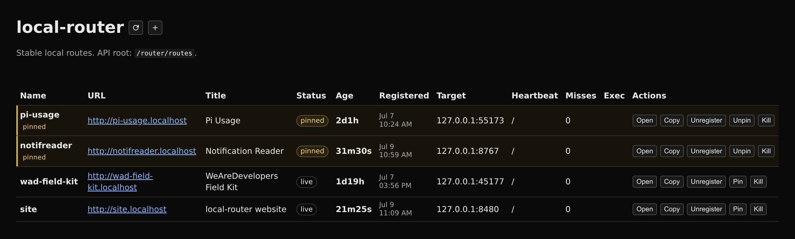

Labels over plumbing
Your local dev servers deserve names.
Friendly URLs for unfriendly local ports. — Keep your existing dev command; stop carrying :5173 in your head.
Ports name machines. Route names name work. A port tells the network where a socket is; a route name tells you what you were doing there.
Make it part of dev
Recommended daily workflowRegistration should not be a separate ritual. Put it in the project’s own dev command, next to the server it describes.
{
"scripts": {
"dev": "local-router register checkout-redesign --port 5173 --title 'Checkout redesign' --exec 'vp run dev' --force && vite --port 5173"
}
}
Name the project where the project starts.
local-router registers the known port, then your existing tool starts the server. The project script owns the sequence; the router still does not launch or supervise Vite.
--forcemakes repeated starts update the same route.--execrecords useful owner metadata in the dashboard.- Choose a name that describes the work, not the framework.
local-router serve running.Using a dynamic port? Use a small wrapper that starts the server, waits until it answers, registers the chosen port, and traps exit to unregister. The website’s own website/run.sh follows that pattern.
Set up once
Router service prerequisitego install forge.dikka.dev/lab/local-router@latestsudo setcap 'cap_net_bind_service=+ep' "$(go env GOPATH)/bin/local-router"local-router servelocal-router statusSee what is running
dev.localhostSee the route, the real port, heartbeat status, age, and owner metadata together.
Pinned names stay reserved. Unpinned names disappear after repeated misses.
Use the dashboard by hand, or make scripts and coding agents register routes.

http://dev.localhost or http://router.localhost.No separate dashboard process.Deliberate scope
Small by designUseful controls
Beyond registerPin a route
Reserve the route while its target is unavailable. It becomes usable again as soon as the server returns.
local-router pin docs-previewExport and import
Snapshot route definitions as JSONL. Optional service snapshots restore them across graceful restarts.
local-router export routes.jsonlList routes
Get the same core route information from the terminal without opening the dashboard.
local-router routesBeyond this machine
Optional · private networkWith wildcard DNS and an explicit non-loopback bind, the same names can reach a phone or another trusted machine. A tailnet is the natural fit: same local work, reachable from the machines you trust.
$ local-router serve --addr 0.0.0.0:80 \ --external-host maple.ts.net # with base + wildcard DNS pointed at this machine: http://client-demo.maple.ts.net
Your network is the boundary. --external-host does not create privacy by itself. DNS, firewall rules, and the chosen bind address determine who can connect.
client-demo.localhostDefault · servedclient-demo.maple.ts.netWith DNS + bind · serveddepends on your networkNot protected by local-routerWhich tool fits?
Selection by intended dutyThese tools overlap at the edges, but they own different parts of the workflow.
| Tool | Owns | Reach for it when… |
|---|---|---|
| Caddy | A configurable web server and reverse proxy, including local or public automatic HTTPS. | you need trusted local HTTPS, TLS behavior, rewrites, middleware, or a real proxy configuration. |
| ngrok | An outbound tunnel and internet-reachable endpoint. | a webhook provider or someone outside your private network must reach a local server. |
| Portless | A runner-oriented friendly-URL workflow with local HTTPS and broader dev-command integration. | you want the naming layer to participate more deeply in how the app starts and chooses its port. |
| local-router | A dynamic name → existing port registry, reverse proxy, and small dashboard. | your server already has a lifecycle and only needs a stable, meaningful local URL. |
Details before adopting
Compatibility · security · stateWhy .localhost?
The IETF reserves localhost. and names beneath it for loopback use. That avoids wildcard hosts-file entries in common browser and resolver setups and keeps route names explicitly local.
Does it use HTTPS?
No. local-router serves HTTP. Modern browsers can treat http://*.localhost as a potentially trustworthy local origin, but that is not TLS. Use Caddy or a local certificate tool when you need to test actual HTTPS behavior.
Will every browser resolve it?
Not universally. Chrome, Firefox, and Edge commonly resolve *.localhost directly; Safari and some OS/resolver combinations may need additional DNS or hosts setup. Test the browsers you support.
What survives a restart?
Live routes are runtime state. Manual JSONL import/export and optional graceful-restart state files can restore route definitions. Pinned routes stay reserved while the router process runs; ordinary stale routes are eventually removed.
Why port 80?
It keeps the friendly URL free of another port number. Linux and WSL normally require CAP_NET_BIND_SERVICE or a systemd capability for a non-root process to bind port 80.
What can it proxy?
Ordinary HTTP methods, paths and query strings, streaming responses, Server-Sent Events, and WebSocket upgrades are passed through to the registered local target.
References: RFC 6761 §6.3 — localhost names · W3C Secure Contexts · MDN — secure contexts